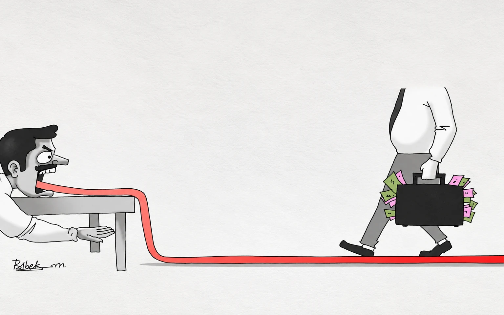

My Best CCRs Made Public

It is my privilege to receive some commendations and outstanding CCRs consecutively for years together during my service career. Of course, at the initial years, I was communicated with an adverse entry one by one IAS officer who became one of my admirers at the later stage. Similarly, once a Secretary gave me’ Very Good ‘ for a few months simply because the officer below him whom he didn’t like gave me a super outstanding CCR (Confidential Character Roll).
Another Secretary did the same thing for a few months as I didn’t oblige him in giving favorable notes as per his sweet will. These are aberrations in the system and I have no regrets. However, I consider myself to be fortunate to garner the blessings of some people in my life which I consider as more precious than all these commendations and outstanding CCRs.
I joined as Sub Treasury Officer in Salipur under Cuttack district on 14th May, 1990 and got relieved on 1st August, 1090. My duration of stay there was hardly two and half months. It was a bigger Sub Treasury with more than 30 DDOs and around 1200 pensioners. My first priority after joining was to get the office corruption free and offer the best of services to the employees and pensioners.
At the outset, I threatened the staff members to take drastic action whenever anybody is found taking bribes. Secondly, I called a meeting of the DDOs and Pensioners Association to listen to their grievances and suggestions to address their concerns and improve the service delivery. This was a novel experiment and got appreciated by many including the Director of Treasuries. I sent the minutes of the meeting to all quarters and asked my staff to follow the instructions.
Salipur being a small place it was a matter of public discussion and one day before the meeting the President of the Primary Teachers Association met me and requested to invite them for the meeting. I politely explained that it may not be proper and they can give their grievances in writing or ask their DDO to place it in the meeting.
After the successful conduct of the meeting my image soared in the locality and I was invited for different meetings as a speaker. Few days thereafter the gentleman once again came to me and asked for the address of my father, telling me that he was interested in communicating with him for inculcating the sense of honesty and modesty in me that I found rare those days. I was amused and readily obliged. In fact, he wrote a lengthy letter to my father praising me and my actions. My father was very happy to receive such a letter and promptly thanked him for this in his reply.
In the meantime, I got transferred to Bhubaneswar by the then Minister who was a long standing friend of my father and on the request of my father for a posting in the Capital. This news was shocking for those who were my admirers. Some of them came to take my consent to try to cancel the transfer order. But on my request, they discarded the idea. The gentleman was one among them and with the reply he received from my father he was eager to meet him in near future.
The day my reliever arrived I was preparing to hand over the charge to him. He was a gentleman fairly senior to me and was on the verge of promotion. Suddenly, I heard a lady crying loudly on the veranda. I called the office peon to enquire about it. He came back to report that the lady was crying on getting the news of my transfer. She was a Muslim widow and military family pensioner. She was crossing three rivers to come to the treasury. I used to ask her about her health and silly other things and ask my staff to disburse her pension on priority so that she could go back in time.
Myself and my successor went outside to find the lady in tears. I tried to console her and assured her that she would continue to get a good servicemen’s future. But her reply baffled me. She confided that no one could match me and even officers had taken money from her hands in the past. Finally, she got herself composed and hugged me like her son and blessed me by putting her hand on my head. She wished that I would prosper to reach the top one day and so also my children would do well in life. Really how fortunate I was ? And how prophetic were her words that day! Her two drops of tears were much more valuable than any official commendation by my higher ups.
Another surprise was waiting for me a few months thereafter. Mr. Tripathi , the leader of the Primary School Teachers Association had his son posted in Jajpur Road in a government office. One morning, he arrived in his office without intimation and when his son enquired about his sudden visit he told him that he had come for a pilgrimage. Then he asked him whether he wanted to visit the Tarini temple in Ghatagaon or Biraja temple in Jajpur Town but he told him that he was there to meet a living God and mentioned the name of my father. His son knew my father well – as a reputed person of the locality – and he took him to my father.
My father was quite happy to meet him and he insisted on meeting my mother too. He stayed back at the request of my father, took lunch in our residence and my younger brother dropped him at his son’s residence in the evening. My parents had every reason to feel proud of their eldest child and for me it was equally a priceless experience in life. It made my commitment to the core principles of public service more stronger in the future course of my career and I followed it religiously.
God is kind enough to bestow on me his blessings in innumerable ways and take me forward amidst all hurdles and challenges with bright success. The journey continues.
Leave a thought
No account needed. Your name and comment appear publicly after approval.